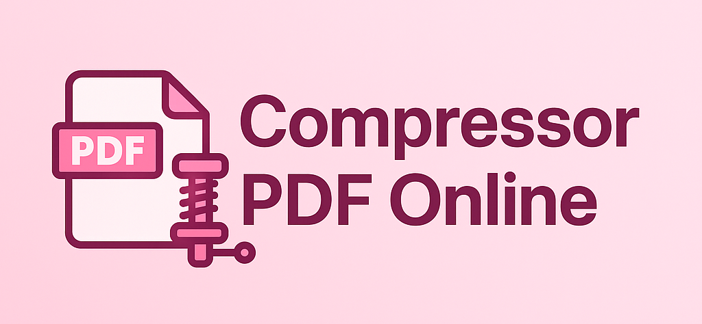

Comprimir PDF
Selecione o PDF:
Escolha o método de compressão:
🖼️ Por Imagem
Converte cada página em imagem JPEG. Permite personalizar escala, qualidade e visualizar detalhes com zoom e panning.
📄 Rebuild pdf‑lib
Reconstrói o PDF mantendo os dados vetoriais e removendo informações desnecessárias.
Opções de Imagem
Escala:
1.00
x
Qualidade JPEG:
100%
Processar Compressão
